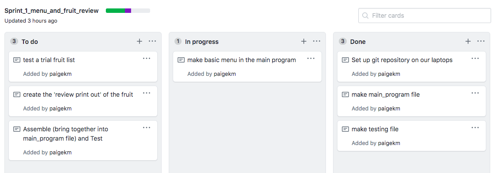
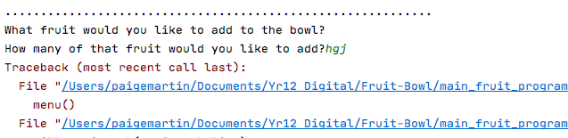
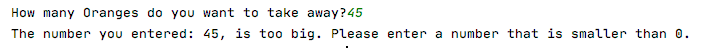

Sprint One
Basic aim/drawn plan
Evidence of Sprint 1 board on Github
Test
Reflect
In this version I started by filling the list with pre-prepared fruit items. However, this doesn't align with the prupose of our project, to create a program that allows individuals to create an online version of their fruit bowl, so all the fruit bowls will be different. Next steps will be to allow the user to enter personalised fruit bowls.
Sprint Two
Basic aim/drawn plan

Evidence of Sprint 2 board on Github
Project Stand Up: Tuesday 9 June
Test
Basic test to show that after using the function to add a new fruit, this fruit is added to the list and can be reviewed by the user. The user is also given confirmation that the addition of a new fruit has worked.
I then integrated this function I created in my testing file, into the main_program. Once in the main program, I tested that the user can "Add a new fruit to the bowl" as a option in the menu.
This is an issue that arose when I carried out a test to try to enter the same fruit twice.
Reflection
During testing, I tried to enter the fruit 'Apple' twice, and this should not be allowed to have happened. In future versions I could print an error message as "Apple is not a NEW fruit entry" or adding the two entries for Apples together to appear as one. I can come back to this once I have completed Sprint 2 - Updating quantities of fruit.
In my Project Backlog I added a comment to my completed Sprint 2 card, to remind me that there are further refinements to come back to, after I have continued to move through the other items in the backlog.
Options or concerns
Printing out with many apples or 1 apple (when to inlcude the /s and when not to)
User can add more new fruit or the function goes directly to main menu after 1 fruit add
Do we accept 0 fruit?
These are going to come from validations later, but not worrying about it now as we are just trying to get a working function. These can be mentioned in options or concerns section.
Current state
This is showing the current state of Project backlog
Commit history on Github repository at the end of Sprint 2 - uploaded changes
Sprint Three
Basic aim/drawn plan
This plan suggests the output that this Version of my fruit bowl program would appear with. It also includes some pseudo code for designing the function to update fruit quantities.
This is an example of an iterative decision I had to make, when planning how I wanted to give the user the option to update the quantities of different fruits in the bowl.
I decided to design my function as shown in Design 1, because it is simpler (gives the user one option in the main menu which is then expanded on).
Evidence/screenshot of Sprint board on Github
Test
This first test shows the output of the first function I designed, simply showing that the program recognises which fruit the user has selected, and that all the correct questions/user entries have been printed.
This shows the update fruit function works when adding items to the fruit bowl. At the bottom, you can see that the 2 carrots that were requested have been added to the bowl. This was helpful to ensure the confirmation messages all appeared and the bowl has been updated by selecting review.
This shows the update fruit function works when removing items from the fruit bowl. At the bottom, you can see that the 10 oranges that were requested have been removed from the bowl. I chose to test removing all the items in the fruit bowl, and it appeared as 0. In future iterations/sprints, I may want to look into removing the Orange column altogether, if there are no current items of that fruit in the bowl.
Reflect
This test showed me, that I need to ensure I list of current fruit bowl contents is printed first, or else the user won't know which fruits are at what index number etc.
I realised that in the main program which I was testing in, the list had still been set to be empty, and so for testing purposes, as I had done in the testing file, I created another list (full_bowl) which I set so then the function printed this list, giving the user an option of fruit index numbers to enter. This speeds up the testing process, because rather than entering fruit and it's quantity to fill the list, with every single test, (using the Add menu option), I could use a pre-prepared one to just test the C menu option (this new change quantity function).
Current state of Project backlog
At this point, I have created two issues in the 'timeline' of the project backlog; suggesting improvements that could be made to my current basic functions - maybe in later sprints.
Sprint 4 Validations
Identifying problems with my current program and user entries
Enter a string/integer instead of the required entry:
The user is able to enter an integer when asked for a string. This is because 'integer' isn't defined; allowing text to be entered as well. However if the user tries to enter a string instead of an integer, it crashes the program. I created a validated function for get_integer, to print a user feedback that their entry is invalid and give them a second chance, if they type "twelve" for example, instead of "12".
Entering an index number out of range
1:
2:
Allows there to be a negative number of fruit
This suggests I need to create limits/validations of how many the user can remove or add (max and min values in my validated get_integer and get_string functions):
Evidence/screenshot of Sprint board on Github
I updated the online Git repository at this stage. Here is the project's commit history so far.
Tests
Showing that validated functions are working and solve all 5 of the user entry issues I noted above
Issue: Enter a string/integer instead of the reqiured entry:
Validated get string function was successful
Validated get_integer function was successful
Issue: Entering an index number out of range
Length of integer:
Length of string:
In the context of choosing a menu option:
Issue: Allows there to be a negative number of fruit
There is nothing in your fruit bowl, not enough of that fruit to remove the amount you want to:
Reflect
- Specific feedback messages:
- Limits on integer entry:
Through testing, I decided that my feeback messages need to be more specific to each integer or string entry scenario that they are used, and need to give the user more guidance as to how to fix the error that has been returned. I changed my validated get integer and get string functions, so that they included the min and max arguments in the feedback message print out. This means the feedback will be specific to the varying min and max values through the program.

In the future I could improve the limits that I set; to either include or not include the value for 50 oranges. When I carried out testing, this was problematic:
Sprint Five
Basic aim
The aim of this sprint was to:
- Create a new function to calculate the sum of fruit in the fruit bowl at any time
- Ensure the code so far is formatted correctly, by putting it through a code checker and updating DOC strings for each function
Evidence/screenshot of Sprint board on Github
Test:
Reflect:
In this version, I had to make an iterative decision.
Option 1, was to create this 'sum feature' in a separate function. The advantages of this, would be to carry out testing and trialling effectively and quickly (can test it as a separate function), and to keep it separate from previous work (in case of mistakes made designing the function).
Option 2 (which I chose), was to integrate this new feature straight into my existing fill_fruitbowl function.
In future versions, I will try to solve a problem I identified earlier,that the user can make a double entry of one kind of fruit eg. 10 Oranges and then 24 Oranges, rather than 34 Oranges total. I plan to investigate this by including a while and if loop in my current fill_fruitbowl function.
Can add two of the same field/fruit
Solution: (from a Version 6)
Another sub-problem from this is likeness between entries. For example a user may enter 10 Oranges and then 24 Orange, or 24 Ornages. When considering spelling mistakes or misentries by the user, in future versions I may want to test a new function to deal with likeness. This could be by creating a 'mother-list' or other likeness python functions. These potential further steps are also included in my Project Backlog. In future versions, I will also resolve any problems I found through my Sprint 4 and 5 testing.
Mis-spelling
Python Style Checker:
Style issues found:
All style issues resolved: